减少每节厚金边与突起，保留双首机关；青铜壳、暗连接和喷口分明，金色不再盖住脸。借鉴蛇类连续躯段，不把机关改成活蛇。
软件对照：左旧右新，相同相机与共同取景范围。以下所有软件模型均逐面采样实际PNG。
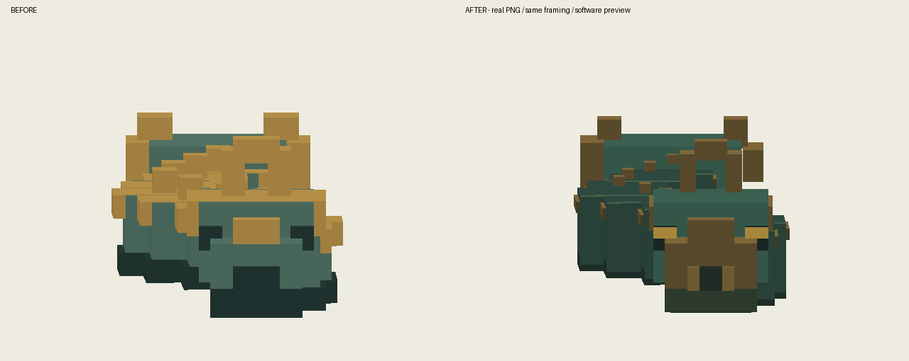
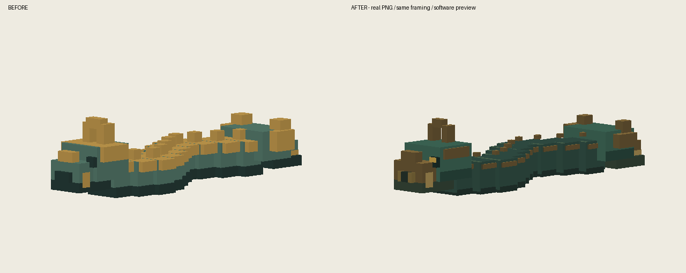
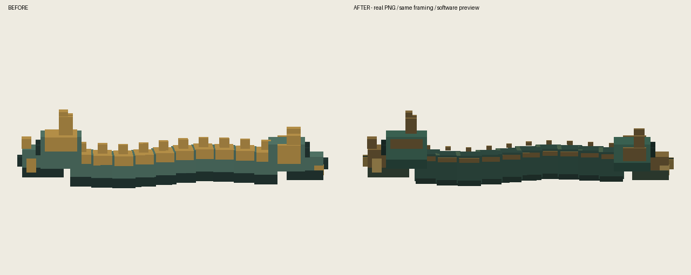
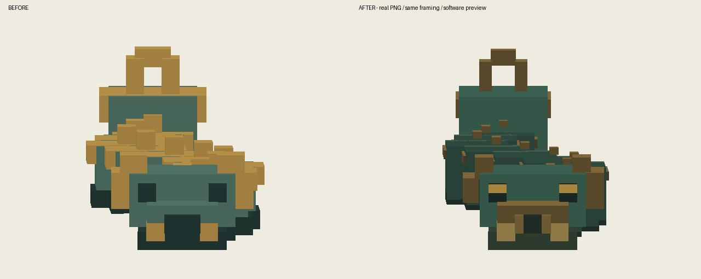
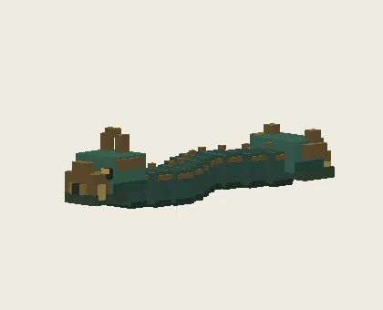
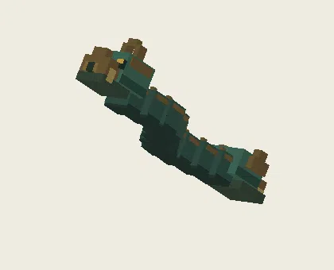
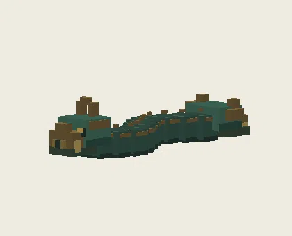
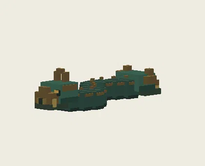
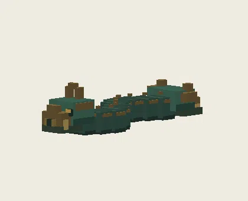
隔离静音测试存档；验证加载、原动作与重载，不代表自然战斗或多人验收。
00-qingtong_shuangtoushekui-front
01-qingtong_shuangtoushekui-45
02-qingtong_shuangtoushekui-side
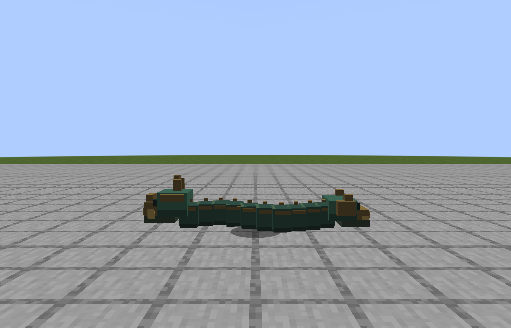
03-qingtong_shuangtoushekui-back
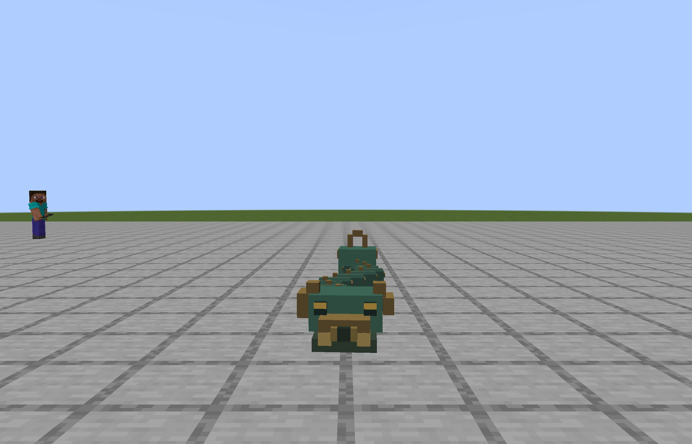
04-qingtong_shuangtoushekui-walk
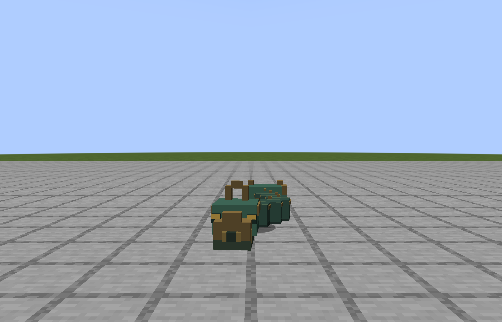
05-qingtong_shuangtoushekui-run
06-qingtong_shuangtoushekui-attack-tell
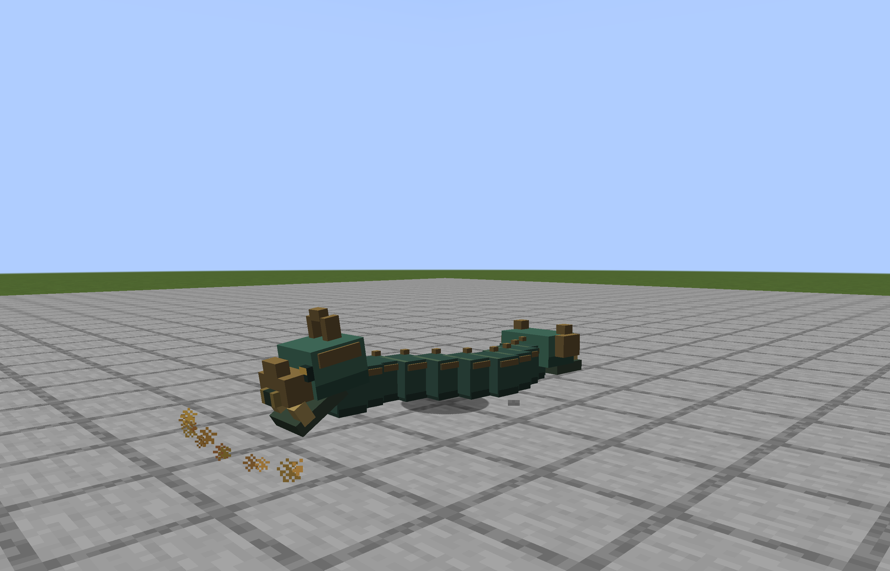
07-qingtong_shuangtoushekui-attack-contact
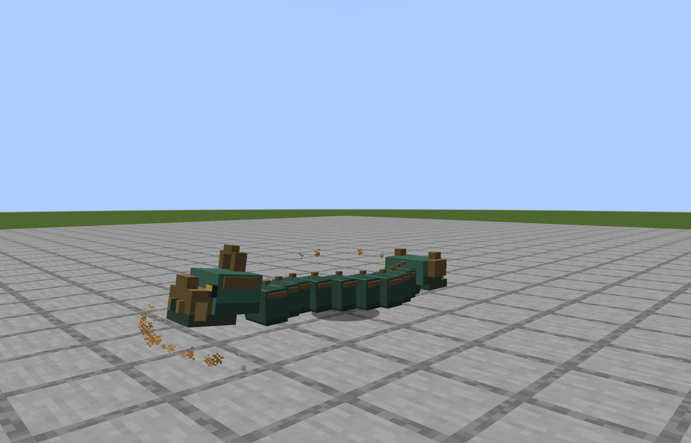
08-qingtong_shuangtoushekui-special-tell
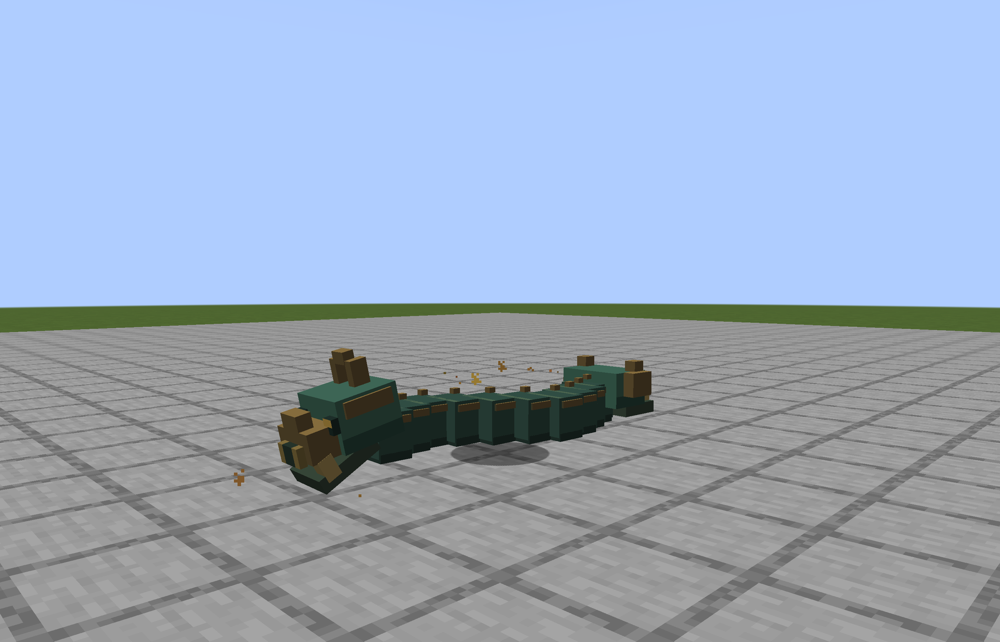
09-qingtong_shuangtoushekui-special-contact
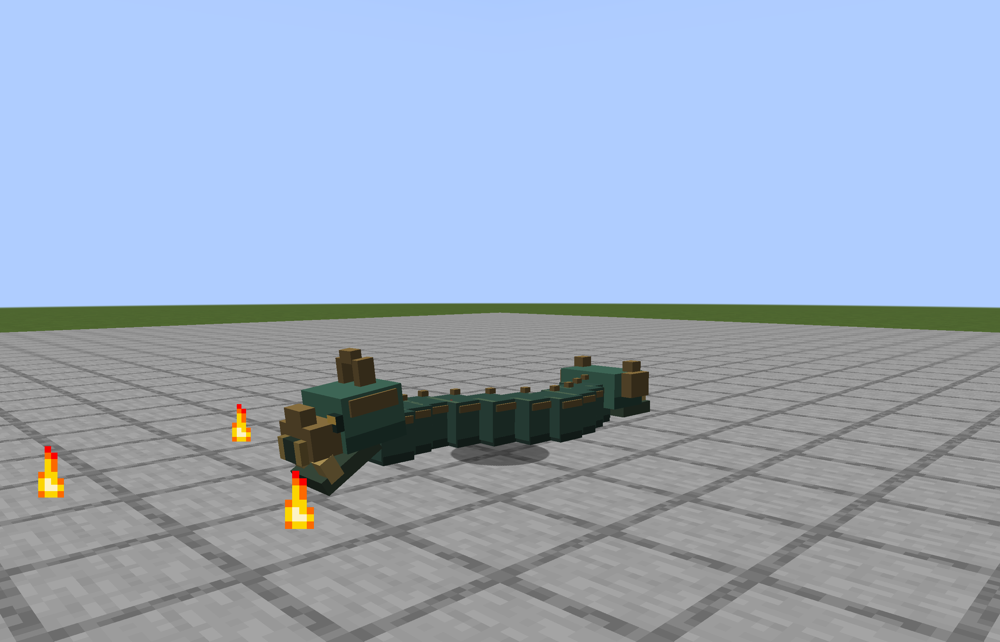
10-qingtong_shuangtoushekui-hurt
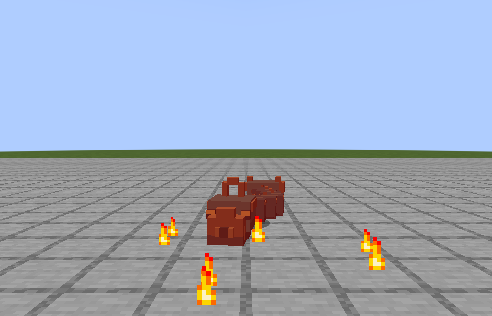
11-qingtong_shuangtoushekui-death
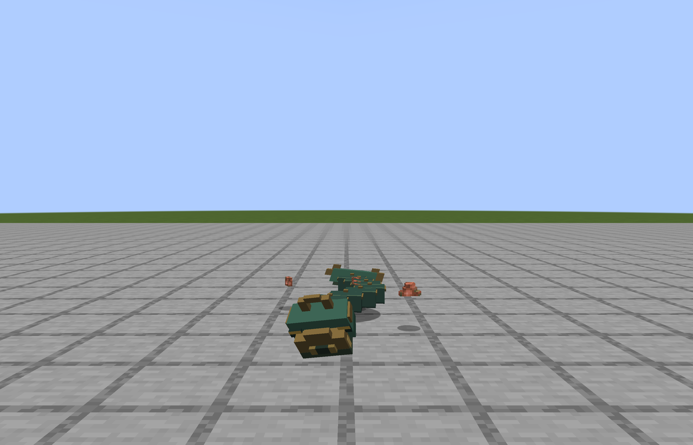
49-qingtong_shuangtoushekui-front
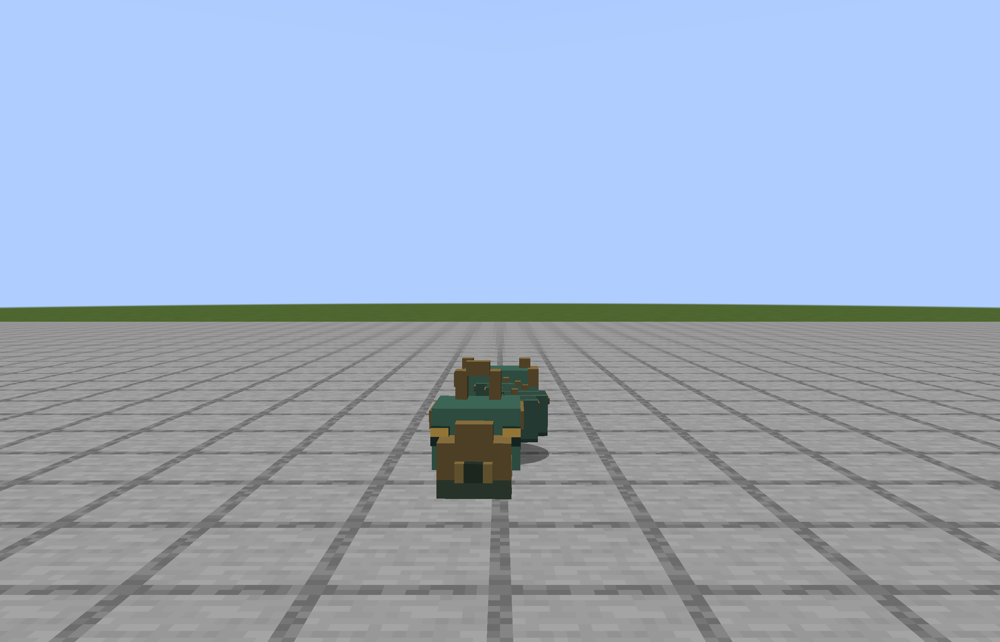